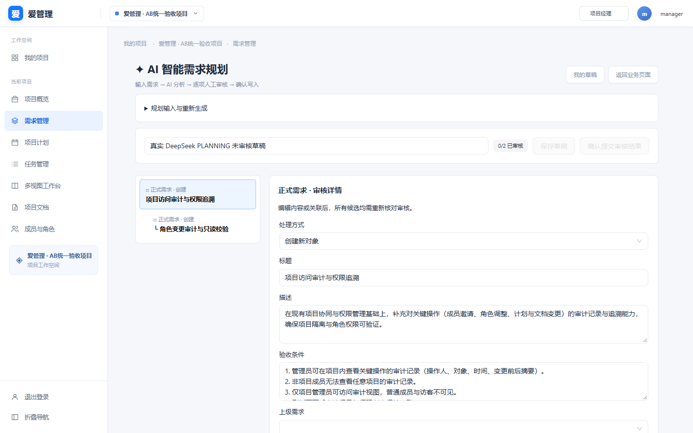

正式 React + NestJS + Docker PostgreSQL 运行截图，验收尺寸 1440×900。原业务保持仓库实现，AI 原型用于增量交互。点击图片查看原尺寸。
七页自动化截图使用明确标记的本地模型协议测试夹具，真实后端/真实数据库，自动化零付费调用。下方另附真实 DeepSeek 联调与本机业务数据库截图，不将夹具结果冒充真实模型。
实际 localhost:5173、原 public 数据库。模型输出已保存为本人草稿，全部未审核；没有正式写入需求、故事、任务或计划。本截图仅恢复已保存结果，不触发新的付费调用。
